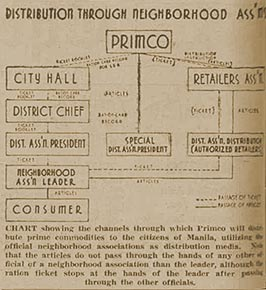

|
j
a v a s c r i p t |
April 23, 1943 — Good Friday
I've been appointed "leader" of 13 Manga Avenue families, and Dr. Alberto leader of the rest. We went to see the district leader at his nipa shack in Buenos Aires to explain that my deficiency in Tagalog would be a problem. We agreed to consider it on Sunday's general meeting.

The Distribution System
Our "41st district" is supposed to have 15 leaders, each one in charge of not less than 5 and not more than 15 families. The leader must take a census of his families and present this to the district leader who forwards it to City Hall. Leaders also have to attend parades and public functions, as well as arrange night patrol schedules. Distribution of lard, soap, sugar and matches is made once a month to the district leader, who distributes them to the leaders, then down to the families. Only kink is that there's hardly any commodities to distribute. Every able-bodied man regardless of age is supposed to patrol, carrying a whistle and nightstick, and wearing an armband. The patrol shifts are from 2100-0130 and 0130-0600. Prior to each patrol, one checks in with HQ (the little nipa shack) for any special instructions. |
|
|
|
|